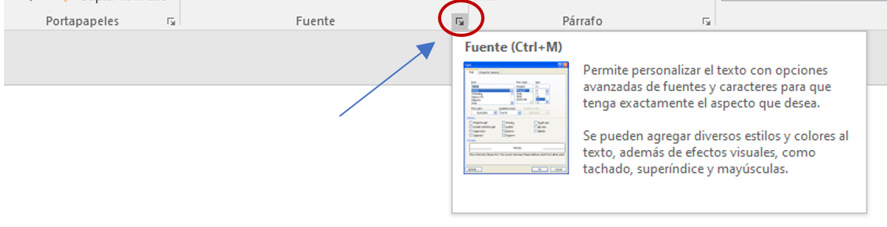

Las herramientas en Word están organizadas de forma lógica en pestañas o fichas (Inicio, Insertar...), que a su vez están divididas en grupos. Una de las pestañas más utilizada es la de Inicio, que contiene los grupos Portapapeles, Fuente, Párrafo y Estilos. Las opciones de Formato nos permiten darle un estilo diferente y original al documento. Nos ofrece distintas opciones para escoger la fuente o el tipo de letra con que vamos a escribir y la elección de color. Además, nos da las opciones para seleccionar los estilos de los caracteres (negrita, cursiva, normal, entre otros.), así como el tamaño de la letra.
Contiene funciones que ayudan agregar a nuestro texto subrayado y funciones específicas como tachar alguna frase o palabra, doble tachado, superíndice, subíndice, sombra, contorno, relieve, grabado, versales, mayúsculas, minúsculas, tipo oración. Es en esta barra donde escogemos los espacios entre caracteres, líneas y párrafos, y otros efectos.
En las últimas versiones de Word se puede controlar por completo mediante el teclado, pulsando la tecla ALT. De esta forma aparecerán pequeños recuadros junto a las pestañas y opciones indicando la tecla (o conjunto de teclas) que deberán pulsar para acceder a esa opción sin la necesidad del ratón.
Las opciones no disponibles en el momento actual se muestran con números semitransparentes. Para salir del modo de acceso por teclado se requiere volver a pulsar la tecla ALT.
.
GRUPO FUENTE
Algunos de los grupos de herramientas de la cinta disponen de un pequeño botón en su esquina inferior derecha. Este botón abre un panel o cuadro de diálogo con más opciones relacionadas con el grupo en cuestión.

Esto nos permite tener acceso a algunos elementos que ya existen en la cinta y a otros a los que no tenemos acceso directamente.

Estas opciones de formato se pueden especificar antes o después de escribir el texto. Para modificar un grupo de caracteres (texto) ya establecido se requiere seleccionar, decirle a Word sobre qué parte de texto tiene que actuar.
Para seleccionar con el ratón hay dos métodos:
Arrastrando. Colocar el cursor al principio de la selección, presionar el botón izquierdo y, sin soltar el botón, mover el cursor hasta el final de la selección.
Haciendo clic. Colocar el cursor en una palabra y hacer doble clic: la palabra completa quedará seleccionada.
Colocar el cursor en una línea, si hacemos triple clic, el párrafo completo quedará seleccionado. Para seleccionar un gráfico o una imagen basta con hacer clic encima, el gráfico quedará enmarcado por un recuadro negro.
De igual forma, se puede seleccionar con el teclado. Por ejemplo:
| Una línea abajo | Mayús. + flecha abajo |
| Una línea arriba | Mayús. + flecha arriba |
| Hasta el final del párrafo | Ctrl + Mayús. + flecha abajo |
| Hasta el principio del párrafo | Ctrl + Mayús. + flecha arriba |
| Una pantalla abajo | Mayús. + AvPág |
| Una pantalla arriba | Mayús. + RePág |
o seleccionar utilizando los elementos disponibles al final de la pestaña inicio.
GRUPO PÁRRAFO
El formato de párrafo (alineación, interlineado, sangrías, etc.) afecta a párrafos completos a diferencia del formato de carácter que solo afecta al texto seleccionado.

GRUPO PORTAPAPELES
La principal función del portapapeles es pegar elementos que contiene en el documento. Al copiar se almacena un elemento en el portapapeles y al pegar se pega el último elemento con las mismas características que se copió. En esta ocasión nos enfocaremos especialmente a un elemento de este grupo.
GRUPO EDICIÓN
Adicional a la opción de seleccionar, en este grupo se ubican las opciones de buscar y reemplazar. Buscar, esta herramienta nos permite localizar un texto dentro del documento para tomar decisiones sobre él.
En el cuadro de búsqueda de la zona superior del panel de Navegación que nos `proporcionada al dar un clic a Buscar, debemos escribir el término que queremos localizar y pulsar INTRO. Word buscará por defecto en todo el documento, excepto si hay una selección realizada. Si hay texto seleccionado buscará únicamente en la selección.
Posterior pulsar INTRO, se resaltarán los términos encontrados con un fondo amarillo. Además, Word nos situará en la página y posición donde se encuentre la primera coincidencia. Podrán colocarse fácilmente en una de las coincidencias haciendo clic sobre ella en el panel de Navegación del lateral izquierdo. O bien, utilizando las flechas arriba y abajo para ir pasando de una coincidencia a otra, en orden de aparición. La búsqueda por defecto no es sensible a mayúsculas y minúsculas. Por lo que, si buscan un término, considerará como resultado válido la palabra escrita de cualquier forma. Si requieren que la búsqueda sea exactamente tal y como se escribe en la caja de búsqueda, deberán introducir el término entre comillas, por ejemplo, así: "texto".
Si lo que queremos hacer es reemplazar una palabra por otra, deberán utilizar el botón Reemplazar, Por lo que se abrirá el siguiente cuadro de diálogo: